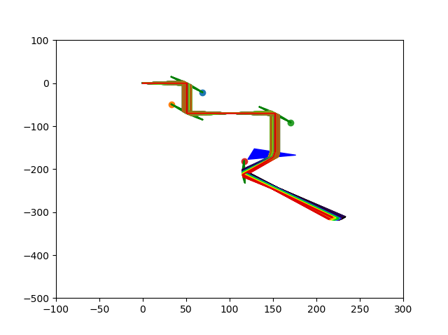
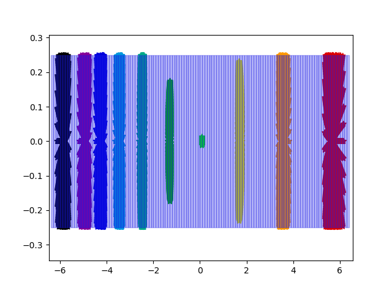
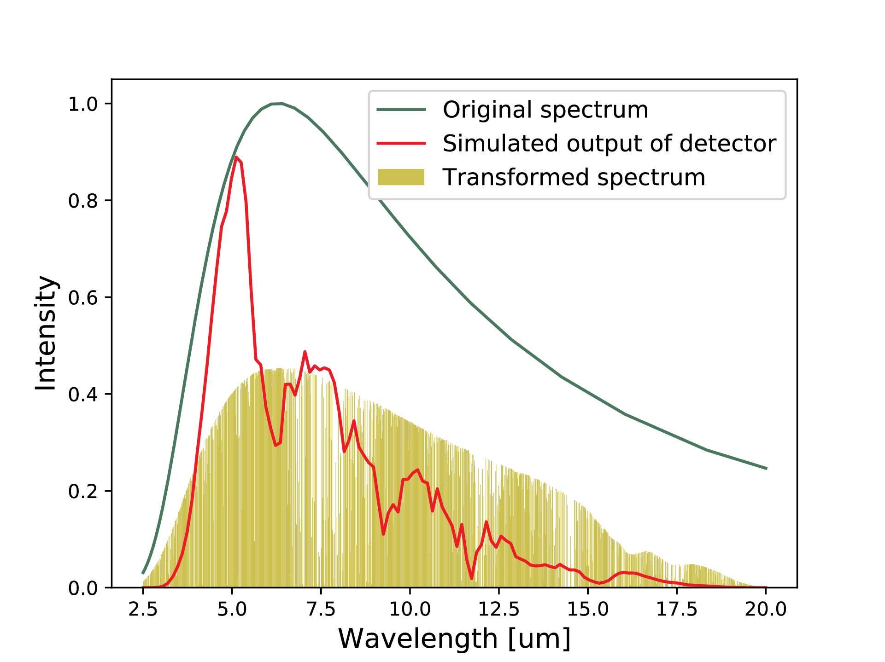
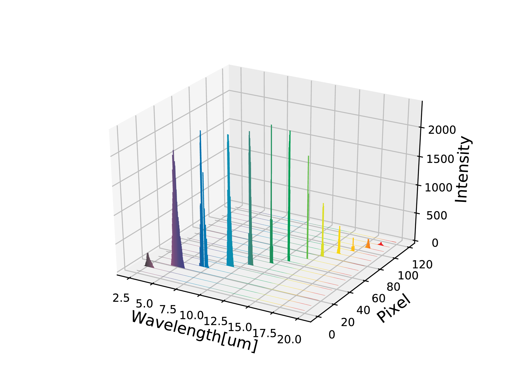

Welcome to Ludwik’s documentation!¶
Longitudinal electron bunch diagnostic simulation for LUIS Project from ELI Beam Lines. For now available is ray tracing simulation of customizable optical transmission lines
Sample of possibilities¶
In file: ‘transmission_line.py’ is placed working example which can be run by simply running the file. It uses settings placed in: ‘settings.py’ file. Commented code provides other options which can be used in different cases. Code of this example is presented below:
# Create transmission line with some optical elements
line = TransmissionLine([
Air(length=50.8),
ParabolicMirror(diameter=50.8, rfl=50.8, pfl=25.4, relative_angle_deg=0, mirrored=True),
Air(length=70),
ParabolicMirror(diameter=50.8, rfl=50.8, pfl=25.4, relative_angle_deg=0, mirrored=False),
Air(length=2 * 50.8),
ParabolicMirror(diameter=50.8, rfl=50.8, pfl=25.4, relative_angle_deg=0, mirrored=True),
Air(length=90),
PrismZnSe(length=50, construction_angle_deg=27, relative_angle_deg=17, thickness=40),
Air(length=50.8),
ParabolicMirror(diameter=50.8, rfl=50.8, pfl=25.4, relative_angle_deg=0, mirrored=False),
Air(length=50.8),
Screen(diameter=12.8, height=0.5, relative_angle_deg=-38 - 23)
])
line.update()
# Plot line shape
ax = line.plot(plot_type=settings.plot_type)
rays = Rays(transmission_line=line)
num_of_rays = settings.no_of_rays
# Generate angles of cone shape beam
positions, anglexy, anglexz = tools.generate_circle_beam(num_of_rays, radius=0.002, boundary_angle=0.1)
# Add rays with generated angles and starting position 0,0,0
rays.add_rays(positions=np.zeros([num_of_rays, 3]) + [0, 0, 0], anglexy=anglexy, anglexz=anglexz)
# Calculate rays geometrics
traces = rays.trace()
# Plot traces
if settings.plot_rays:
rays.plot(ax, plot_type=settings.plot_type)
rays.plot_on_screen()
rays.transform_energies()
rays.plot_characteristics()
plt.show()
Example generates 2D plot of geometric simulation

{kind=link}
Geometrical rays propagation through optical line
Sample of rays colliding with the screen, erased rays which do not fit in screen

{kind=link}
Points of rays intersection with the screen
With this example we can also generate other characteristics, but we have to change settings to be able to get proper data

{kind=link}
Comparison of input spectrum, transformed by setup and simulated output of detector

{kind=link}
Spectrum overlapping on detector